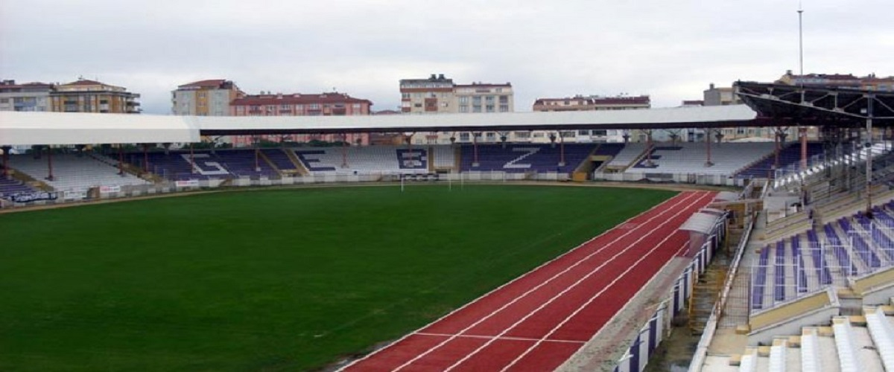

Gebzespor, Kocaeli ilinin, Gebze ilçesinin spor kulübü.
Kocaeli' de kurulan ilk futbol kulübüdür. Rafet Yüce ve Aziz Saka öncülüğünde 1955' te Gebze Gençlik Spor Kulübü adı altında kurulan kulüp 1977 yılında Gebzespor Kulübü ismini almıştır. Renkleri Mor-Beyaz'dır.
1995 yılına kadar Metin Oktay Stadı'nda maçlarını oynayan Gebzespor Kulübü, 1995 yılında 8.000 seyirci kapasiteli Gebze Şehir Stadı'nda mücadelesini sürdürmüştür. 1955'te atılan temelin 1990'da tamamlanmasıyla beraber burada maçlarını oynamıştır. 2007'de dönemin Kulüp Başkanı Ali Rıza Demirçeviren öncülüğünde ve dönemin Gebze Belediye Başkanı İbrahim Pehlivan'ın katkılarıyla stad yenilenmeye alınmıştır ve 2008 yılına gelindiğinde dörtte biri kapalı olan stadın dörtte ikisi kapatılmıştır ve stad kapasitesi 33000 kişiye ulaşmıştır. Stad 2011 yılında eski kocaeli milletvekili Alaettin Kurt adını almıştır. 2012 22 Şubatında U-18 Millî takımlar Türkiye-Belçika maçı bu stada verilmiştir. Günümüze kadar geçen zaman zarfında Gebze İlçe Stadı'nın dörtte üçü kapatılarak daha uygun hale getirilmiştir.